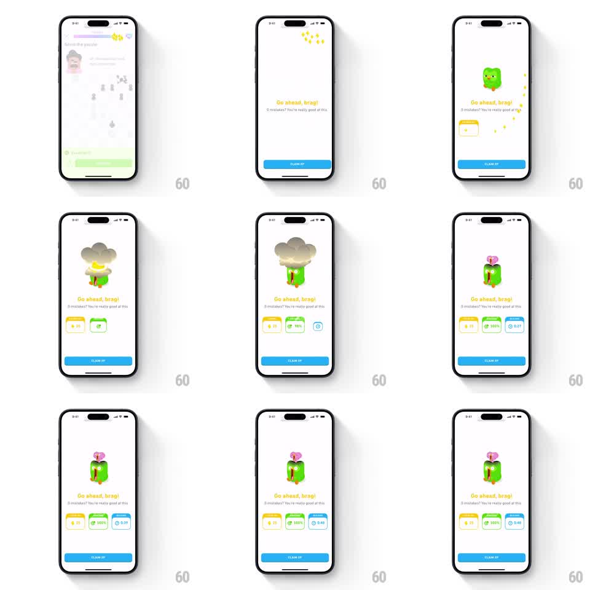

Media
Frame-by-frame

Rebuild this animation 1:1: Duolingo's perfect-lesson celebration - Duo the owl drops in under a spray of sparkles, his head pops off in a cartoon explosion cloud and regenerates as a floating pink question-mark brain, while three stat cards (XP, accuracy, time) stagger in below the "Go ahead, brag!" headline and a blue CLAIM XP button anchors the bottom.

Rebuild this animation 1:1: Duolingo's perfect-lesson celebration - Duo the owl drops in under a spray of sparkles, his head pops off in a cartoon explosion cloud and regenerates as a floating pink question-mark brain, while three stat cards (XP, accuracy, time) stagger in below the "Go ahead, brag!" headline and a blue CLAIM XP button anchors the bottom. ## Integration Integration: stack-agnostic spec - springs given as stiffness/damping, timed motions as duration + curve; map every value to your framework and animation library of choice. ## Scene White celebration screen. Yellow sparkles in the top corner. Center: Duo the green owl. Headline "Go ahead, brag!" with subline "0 mistakes! You're really good at this". Below: three stat cards in a row - yellow "20 XP" (TOTAL XP), green "100%" (ACCURATE), blue "0:39" (NO MISTAKES/time) - each with a colored header tab. Bottom: blue CLAIM XP button. ## Motion spec Pattern: mascot gag with staggered stat reveal. - Duo drops in from the top (spring ~260/16, squash on land) as sparkles pop around him (6 pieces, staggered 60ms). - The explosion: Duo's head bursts into a gray-brown cartoon smoke cloud (scale 0.2 -> 1.4, 300ms, ease-out) that covers his head and billows (2 pulses, 400ms). - The smoke clears (fade 250ms) to reveal Duo's head replaced by a floating pink question-mark/brain blob that hovers and bobs (translateY +/-4pt, 1s loop). - Headline and subline fade up (200ms each, staggered 100ms). - Stat cards stagger in left to right (150ms apart): each rises 20pt with a spring (~320/20). - The accuracy card's value counts 0 -> 100% (400ms); the time card counts up to 0:39 (400ms); XP counts to 20 (300ms). ## Calibration - The explosion is the gag - it must fully obscure the head for a beat before the reveal. - Card stagger starts only after the new head is in place. ## Reduced motion Duo fades in with the question-mark head already on; cards fade in together; values set instantly. ## Don't miss - The smoke cloud is gray-brown and cartoony, not a fiery explosion. - The floating head blob keeps bobbing after everything else settles.